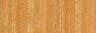
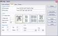

Drago
Drago

Risorse

Esempi di stampa ed esportazione

Versione Attuale
L'attuale versione di Drago è la 4.23. Scaricala o dai un'occhiata alle note di rilascio per una descrizione degli ultimi cambiamenti.
Le versioni Italiane dell'interfaccia e della guida in linea saranno aggiunte nella prossima versione di Drago. Nel frattempo potete scaricarle qui.
Decomprimete i file nella cartella di installazione di Drago e spostate il file Drago-It.lng nella sottocartella Languages.
Cos'è?
Drago è una applicazione freeware per Windows dedicata al gioco del Go. Permette di:
- navigare attraverso e modificare i file delle partite,
- stampare e esportare,
- creare archivi di partite e la ricerca nelle partite di schemi o di diverse informazioni (giocatori, risultati, date, ...)
- rivedere e rigiocare le partite,
- risolvere problemi,
- giocare contro il Computer.
Altre caratteristiche:
- Unicode
- Interfaccia schedulare
- Esportazione di partite in formato RTF, PDF, HTML e Word
- Esportazione di figure in formato WMF, BMP, JPEG, GIF, PNG e ASCII
- Installazione Standard, disintallazione completa
- Conformità agli standard SGF
- Lettura di file contenenti più partite e lettura di intere cartelle
- L'Instazione prevedere una intera collezione di partite (in formato SGF e con relativo archivio) e quattro collezioni di problemi.
- ... ed altro ancora.
Drago è tradotto in:
|
|
|
( : E' diponibile per la traduzione della Guida in linea al programma)
Se sei interessato ad aggiugnere un ulteriore lingua, ti prego di farmelo sapere. La pagina delle traduzioni ti fornirà alcune informazioni tecniche.
Installazione
Hai bisogno di:
- Scaricare l'ultima versione
- Decomprimere l'archivio zip e lanciare il programma d'installazione
Per giocare contro il Computer, o meglio contro un motore di gioco (GNU Go, Go169, MoGo, etc.), devi scaricarne uno e dichiararlo nella scheda dei motori di gioco all'interno della finestra di dialogo delle opzioni. Tutti i motori di gioco più comuni sono già definiti e non dovete preoccuparvi dei parametri da passare in linea di comando. Una guida all'integrazione dei motori di gioco in Drago è disponibile qui.
libkombilo
Drago viene installato e si interfaccia con la libreria libkombilo. Questa libreria open source è sviluppata da Ulrich Goertz e fornisce tutte le funzioni del suo programma di archiviazione Kombilo.
Collegamenti
Alcuni link di carattere generale o che offrono risorse che ben si adattano a Drago sono elencate qui.
Risorse
Potete controllare la pagina delle risorse per:
- una collezione di sfondi lignei (disponibili anche nell'installazione di Drago)

- uno script Perl per convertire i file di goproblems da html a sgf
- una collezione di problemi 4x4 estratta da goproblems con il precedente script
Qui puoi anche scaricare una collezione di partite 9x9 con il commento tradotto in italiano
Fai Click sull'icona per vedere un'anteprima

Finestra Principale

Vista delle Informazioni di Gioco

Vista delle icone

Finestra di dialogo per la formattazione di stampa

Finestra di dialogo per esportare una posizione

Finestra di dialogo per modificare le Opzioni